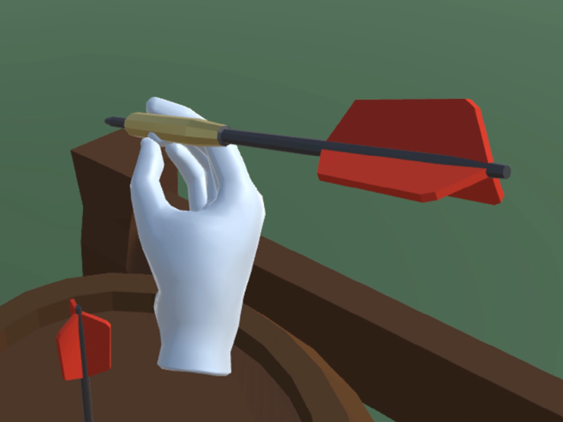
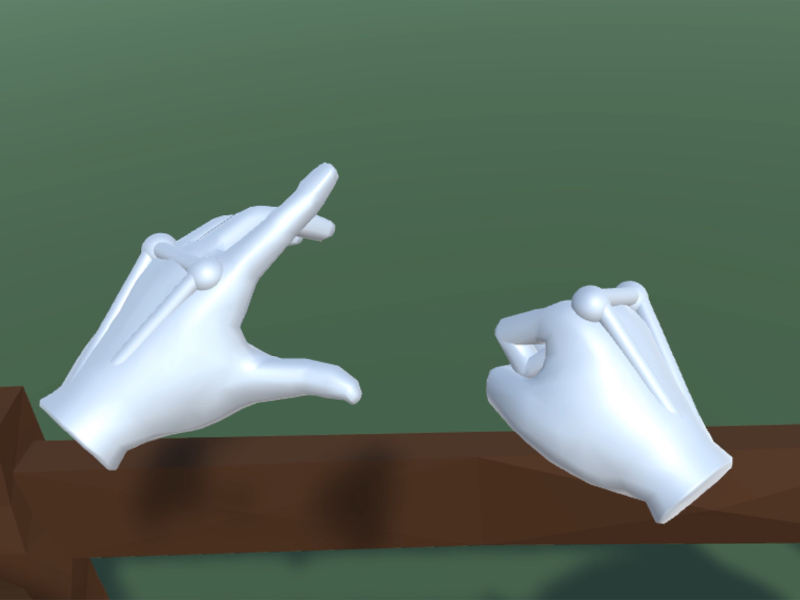

Presence verbessern
Verbesserung des "Daseins in VR"
durch narrative Untermalung
Masterarbeit an der Universität Ulm


Premisse
Ist es möglich das Gefühl in der virtuellen Welt zu sein durch Erzählelemente einer Geschichte zu verbessern? Um dies zu testen habe ich ein kleines VR Dart-Spiel gebaut. Da VR Spiele auf einem Spektrum von realistisch zu fantastisch gebaut werden, gibt es auch hier im Dart Spiel verschiedene Versionen. Manche sind eher realistisch, manche komplett aus einer Fabelwelt. Jede dieser Versionen wurde von zwei verschiedenen Gruppen gespielt. Die eine Gruppe hat normale Anweisung bezüglich der verschiedenen Wurfarten bekommen, wohingegen die andere Gruppe durch kleine Geschichten zu den verschiedenen Versionen mehr eingebunden wurden.
Herausforderungen
- Erstellen einer robusten und gleichzeitig angenehmen Benutzerstudie
- Langeweile sollte minimiert werden (die repetetieven Fragebögen sind schon nervig genug)
- Aufzeichnen aller wichtigen Metriken für spätere Analyse
szenarios
Normales Szenario - Keine Verbesserungen. Die Spieler*innen müssen den Dart durch eigene Muskelkraft werfen. Es kann mit dem Trigger am Oculus Controller gegriffen werden. Für jedes Szenario wird dieselbe Zeit beansprucht. Alle drei Versionen gibt es ebenso in einem Wettkampf Modus, wobei Versionen sowie Modus in zufälliger Reihenfolge gespielt werden. Der Wettkampf-Modus soll Druck bei den Spieler*innen aufbauen mit einem Countdown der Zeit sowie einer Bestenliste mit Punkten des Spielers sowie anderer Spieler.
Verbessertes Szenario - Die virtuelle Figur der Spieler*innen trägt eine Art Exo-Skelett, welches übernatürliche Kraft verleiht. Die Darts können damit deutlich stärker geworfen werden. Im normalen Szenario wird die Bewegungsrichtung und Kraft der Wurfhand and den Dart weitergegeben im Moment des Loslassens. Im verbesserten Szenario wird diese Wurfbewegung erst vervielfältigt und dann an den Dart weitergegeben. Diese Art des Werfens ist deutlich leichter und besonders genau.

 Magisches Szenario - Im unrealistischsten aller Szenarien ist es dem oder der Spieler*in möglich ein magisches schwarzes Loch zu platzieren. Das schwarze Loch kann dann durch Kurbelbewegungen der Wurfhand aufgeladen werden. Je mehr das schwarze Loch aufgeladen wird, desto mehr zieht es dann den geworfenen Dart an. Mit voller Aufladung wird der Dart immer perfekt im Zentrum des schwarzen Lochs landen, was einen Volltreffer geradezu garantiert. Oh und wenn das nicht genug Magie ist, müssen die Darts hier nicht aufgehoben werden, sondern erscheinen einfach in der Wurfhand.
Magisches Szenario - Im unrealistischsten aller Szenarien ist es dem oder der Spieler*in möglich ein magisches schwarzes Loch zu platzieren. Das schwarze Loch kann dann durch Kurbelbewegungen der Wurfhand aufgeladen werden. Je mehr das schwarze Loch aufgeladen wird, desto mehr zieht es dann den geworfenen Dart an. Mit voller Aufladung wird der Dart immer perfekt im Zentrum des schwarzen Lochs landen, was einen Volltreffer geradezu garantiert. Oh und wenn das nicht genug Magie ist, müssen die Darts hier nicht aufgehoben werden, sondern erscheinen einfach in der Wurfhand.
Wie erschafft man ein schwarzes Loch — Oder überspring das Kopfzerbrechen einfach!
Falls du interessiert bist wie das schwarze Loch funktioniert können wir uns das mal näher ansehen: Unity 3D hat gravitation und Kraftübertragungen schon in seiner Engine implementiert. Wenn man also ein Objekt wirft, verhält es sich fast genau so wie echt. Wir müssen also nur noch die Anziehungskraft der Magie implementieren.
Drei unterschiedliche Stufen der Anziehung werden in meinem Projekt verwendet um die magische Kraft des schwarzen Loches zu realisieren. Die erste Stufe ist das Newtonsche Gravitationsgesetz. Die Kraft F der Anziehung zweier Objekte wird berechnet durch: \[F=G\cdot \frac{m_{1}\cdot m_{2}}{r^2}\] Das Problem mit dieser Gleichung ist, dass bei sehr kleinen Distanzen \(r^2\) gegen Null geht und damit der gesamte Bruch sich an Unendlich annähert. Das bedeutet je näher sich die anzuziehenden Objekte kommen, desto gigantischer wird die Anziehungskraft dazwischen. Das führt zu einen Problem in Unity. Die Endgeschwindigkeit des geworfenen Objektes wird zu schnell und es fliegt praktisch durch das Ziel. Unity registriert den Dart kurz vor dem Auftreffen und dann erst wieder viel zu spät, da der Pfeil im kleinsten berechenbaren Zeitschritt eine so große Distanz zurückgelegt hat. Er verfehlt damit die Bounding Box der Zielscheibe komplett,
die eigentlich die Treffer registrieren sollte.
Also wie können wir das Erzeugen neuer Galaxien verhindern?
Um die unnötige Beschleunigung naher Objekte zu umgehen, wechseln wir dafür zu einer anderen Anziehungsmethode. Die Beschleunigung durch das schwarze Loch ist zu Genüge, deswegen wir nur noch den Dart steuern. Wenn der Pfeil in eine gewisse Reichweite zur Zielscheibe gelangt interpolieren wir einfach die Flugrichtung und die Richtung zum platzierten schwarzen Loch über die Distanz zwischen Dart und Ziel. Das hört sich kompliziert an, ist aber nur eine Umlenkung hin zum schwarzen Loch je näher der Dart dem gewählten Zielpunkt kommt.
Das hier ist die Berechnung der neuen Flugrichtung:
Vector3 targetVelocity = Vector3.Slerp(velocity.normalized, (direction).normalized, 1 - (distance / attractionRadius));
Kurzgesagt: gib mir eine Peilung zwischen aktueller Position und Ziel, welche SO weit zu unserem Ziel fortgeschritten ist.
Diese zweite Methode garantiert, dass wenn der Pfeil im direkten Umfeld des schwarzen Loches ist, dann auch immer das Zentrum trifft. Und um sicher zu gehen, dass kein weiterer Unfug mit dem Dart geschieht, wird mit der dritten Anziehungsmethode jegliche Manipulation knapp vor dem Auftreffen auf die Zielscheibe abgestellt.
Mit diesen drei Stufen wird der Dart immer das schwarze Loch auf der Zielscheibe treffen, sofert es stark genug aufgeladen ist.
//Gravitational constant, not to confuse with the gravity of Earth (g)
const float G = 66.74f;
public float attractionRadius = 10f;
void Attract(Attractor objToAttract)
{
Vector3 direction = transform.position - objToAttract.transform.position;
float distance = direction.magnitude;
//if we are super close we're on the home stretch, no attraction needed
if (distance < 0.3f)
{
return;
}
//if we are close we change to a self guiding mode
if (distance < attractionRadius)
{
//use homing as attraction mode.
Vector3 velocity = objToAttract.GetComponent().velocity;
Vector3 targetVelocity = Vector3.Slerp(velocity.normalized, (direction).normalized, 1 - (distance / attractionRadius));
objToAttract.GetComponent().velocity = targetVelocity * velocity.magnitude;
return;
}
//for any other distance attract the thrown object by gravity
else
{
//use mass and gravity as attraction mode
//force magnitude calculated by G * (m1 * m2) / dist^2
float forceMagnitude = G * (mass * objToAttract.mass) / Mathf.Pow(distance, 2);
Vector3 force = direction.normalized * Mathf.Clamp(forceMagnitude, 0f, 1000f);
//Forces with direction and magnitude can be added to objects, altering its trajectory
objToAttract.GetComponent().AddForce(force);
}
}
Ein einziges Paket geschnürt


Das Anziehen der VR Brille und Controller ist ein wenig fummelig und umständlich, vor allem wenn man wenig Erfahrung mit dem System hat. Deswegen ist das Ausfüllen von sechs Fragebögen im Verlauf der Studie eine große Hürde. Deswegen habe ich einen einfach wiederverwendbaren VR Fragebogen erstellt. Daraus folgen einige Vorteile:
- Spart Zeit bei VR Studien
- Intuitiv zu erlernen
- Text- sowie Bildfragen möglich
- Fragen können nicht übersprungen werden oder verloren gehen
- Es macht deutlich mehr Spaß!
Impressionen der Nutzerstudie
Zu Testzwecken habe ich ein paar persönliche Durchgänge der Studie aufgezeichnet. Das Video zeigt Ausschnitte dieser Testdurchgänge. Eigentlich waren in-game Aufnahmen nicht geplant, weswegen bei diesem Video kein Ton vorhanden ist.